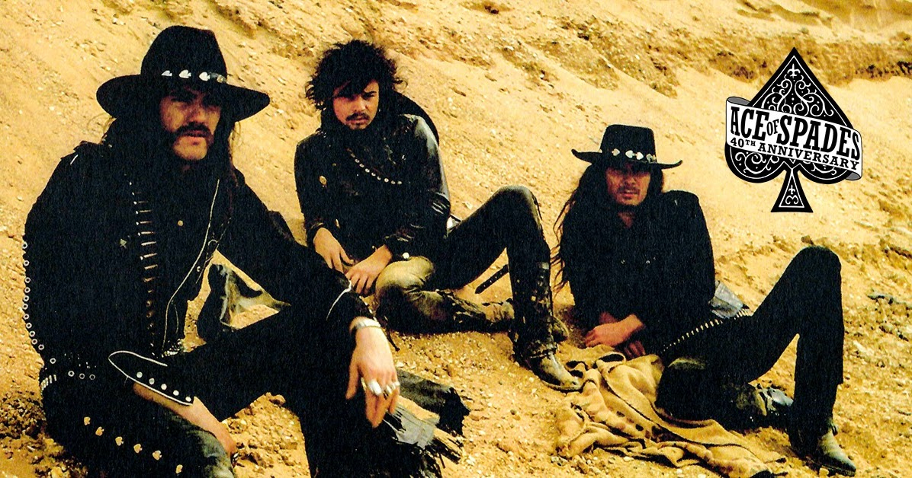

Motorhead were formed by Lemmy after he was fired from his previous band Hawkwind, he promised it to be fast and heavy. Its first album Motorhead sold at 1977. Motorhead gained attention and later in 1979 they released 2 of their best selling albums Overkill and Bomber and they become quite famous. One year later they released the ultimate success and one of the greatest and best heavy metal album of all Ace of Spades. They followed with many other great albums like Iron Fist, Another Perfect Day, Orgasmatron, Rock 'n' Roll and 1916.
The band didn't really do well in the 90s like many other bands, releasing mediocre albums but eventually in the 00s they released a great album Inferno. In the 10s in 2015 they released their last album Bad Magic, which was also a great album.
